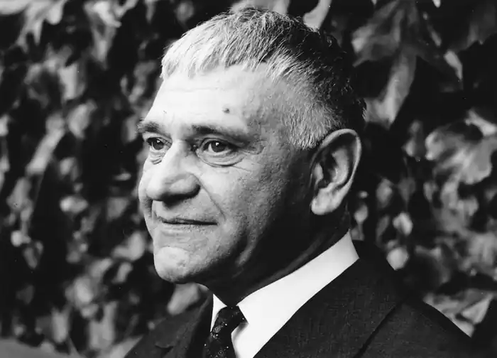

Костецький Ігор Богданович
(14 травня 1913 — 14 червня 1983)
Письменник, перекладач, критик, режисер, видавець Справжнє ім'я — Мерзляков Ігор В'ячеславович Ігор В'ячеславович Мерзляков народився 1913 року в Києві. Його батько був педагогом вокалу. Майбутній літературний псевдонім письменника — Костецький — був прізвищем його матері. У 1928 Костецький закінчив семирічку. Він одержав театральну освіту і пізніше працював режисером в Ленінграді, Москві та на Уралі. У 1919-1924, 1940-1942 рр. жив у Вінниці. Костецький був особисто знайомий і листувався з провідними представниками західного модернізму, такими як Езра Павнд, Томас Еліот та Арнольд Шенберґ. В 1950-1960х роках Костецький був редактором ілюстрованого часопису "Україна і Світ". У кінці 50-х років заснував видавництво "На горі", що спеціалізувалося на виданні перекладної літератури українською мовою та української поезії. Костецький був одружений з письменницею Елізабет Котмаєр. Письменник помер 1983 року в м. Швайкгайм біля Штутгарта (Німеччина), похований там же. Костецький належав до засновників і чільних теоретиків Мистецького українського руху в еміграції та найяскравіших українських письменників-модерністів свого покоління. Його літературну спадщину складають оповідання, повісті, романи, п’єси, вірші, подорожня проза, кіносценарії, есеї, українські переклади творів світової літератури.